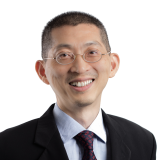
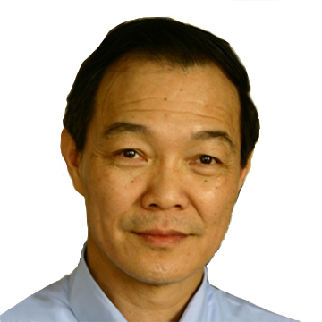
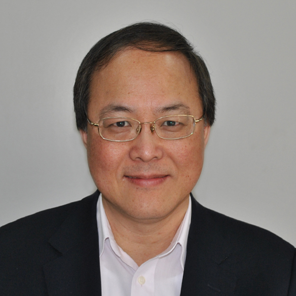
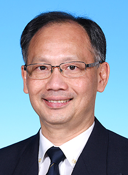
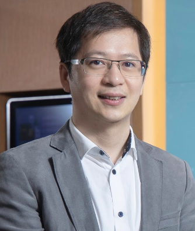
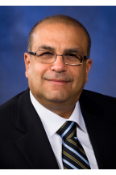
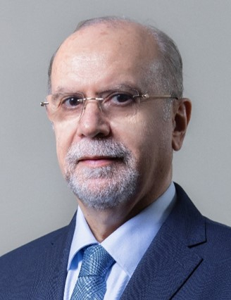
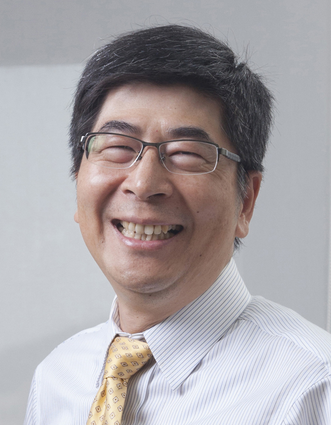
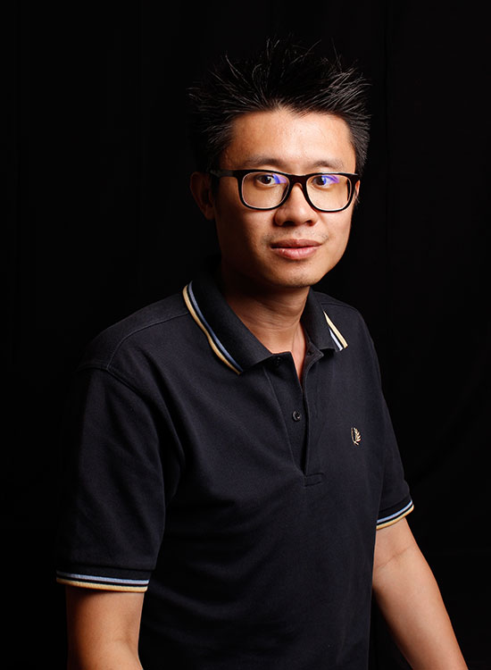

演讲主题：Fusion of Technologies摘要： Fusion of technologies starts with interdisciplinarity which draws knowledge from different fields and creates new areas by working across boundaries. Product development is becoming exceedingly complex and innovative products require unrelated technologies combined in new ways. This talk begins with an introduction of STEM education and interdisciplinary learning. As teaching and research are the yin and the yang of successful universities, it is important to understand the teaching-research connections. If you have teaching without research, you risk of not creating new knowledge. If you have research without teaching, you risk of imparting past knowledge. So, what are the new skill sets and attributes in preparing young people to excel and succeed in the 21st century? To answer this question, a new education model in a new era is proposed. In addition, the fourth industrial revolution will change the world dramatically. The impact will be far greater than its three predecessors. Specifically, many existing PMET (Professional, Manager, Executive and Technician) jobs as well as traditional universities, technologies and industries will disappear. Together with the pandemic, they will accelerate the pace of digital transformation as well as create new job opportunities and growth areas. Finally, this talk will present new research areas. These exciting transformations will change how we think about research collaborations. It will also change the nature and direction of our research. What are the challenges of modern education? What are the next big things? How is it going to affect us? This talk will attempt to answer these questions.
 |
演讲主题：Self-Evolving and Transformative (SET) Protocol Architecture for 6GThe fusion of digital and real worlds in all dimensions will be the driving force for future sixth-generation (6G) wireless systems. Ubiquitous in-time and on-time communication services between humans, machines, robots, and their virtual counterparts are essential, and they expand from the ground to air, space, underground, and deep sea. 6G systems are not only data pipelines but also large-scale distributed computing systems with integrated sensing, processing, storage, communication and computing capabilities. It is challenging to build ubiquitous and intelligent 6G systems, handling stringent quality-of-service (QoS) requirements, providing a rich set of communication modes, including unicast, multicast, broadcast, in-cast, and group-cast, and supporting user-centric mobile applications. In this talk, we introduce a new protocol architecture, Self-Evolving and Transformative (SET) architecture that can provide a wide range of control functions, and be intelligently configured for different types of 6G applications and networking environments. Its design principles, potentials, and open issues are discussed. We also introduce a use case applying the architecture to develop a mobility-aware multi-path QUIC protocol for satellite networks.
|
|
Lin CAI 是维多利亚大学电气与计算机工程系的教授。她是NSERC E.W.R. Steacie Memorial Fellow，加拿大工程学会(EIC) Fellow，加拿大工程院(CAE) Fellow, IEEE Fellow，加拿大皇家学会学院会员，以及N2Women的2020年“计算机网络与通信之星”。她的研究兴趣涉及通信和网络的多个领域，主要关注支持新兴多媒体流量和物联网的网络协议和架构设计。她是IEEE维多利亚分会车辆技术和通信联合分会的联合创始人和主席。她是IEEE车辆技术协会(VTS)理事会的当选成员，2019年至2024年，并担任其副总裁。她是IEEE车辆技术交易的副主编，IEEE VTS协会和IEEE通信协会的杰出讲师。 |
演讲主题：A Knife Cuts Both Ways –Attacks and Defenses of Deep Neural Networks摘要： The flourishing Internet of Things (IoT) has rekindled on-premises computing to allow data to be analyzed closer to the source. Neural architecture search, open-source deep neural network (DNN) model compilers and commercially available toolkits have evolved to facilitate rapid development and deployment of Artificial Intelligence (AI) applications. This “model once, run optimized anywhere” paradigm shift in deep learning computations introduces new attack surfaces and threat models that are methodologically different from existing software-based attacks. Model integrity is a primary pillar for AI trust to ensure that the system delivers and maintains the desirable quality of service and are free from unauthorized deliberate or inadvertent manipulation of the system throughout the lifetime of their deployment. A superior and well-trained DNN classifier is not only an intellectual property (IP) of high market value but also consists of private and sensitive information. Unfortunately, existing DNN hardware implementations mainly focus on throughput and energy efficiency optimization, which can unintentionally introduce exploitable vulnerabilities. The situation is aggravated by the trend of outsourcing model training, renting cloud computing platforms, and deploying partially or fully trained third-party models for AI application development and edge inference. This talk will present some of our research works on the attacks and defenses of DNNs.
|
|
Chip Hong Chang现任新加坡南洋理工大学电气与电子工程学院的教授。2008年至2014年，他担任EEE学院校友助理主席;2000年至2011年，他担任高性能嵌入式系统中心副主任;2003年至2009年，他担任集成电路与系统中心项目主任。他被授予2022年VISTA硬件安全卓越奖。合编专著6部，出版专著13章，发表国际期刊论文120余篇(IEEE论文80余篇)，国际会议论文200余篇(以IEEE为主)。他目前的研究兴趣包括硬件安全、人工智能安全、生物识别安全、可信感知和后量子密码学和边缘计算智能的硬件加速器。他已经发表了50多次主题演讲，会议，教程和邀请研讨会。Dr.Chang目前担任IEEE信息取证与安全交易(TIFS)的高级区域编辑，IEEE电路与系统交易- i (TCAS-I)和IEEE超大规模集成系统交易(TVLSI)系统的副编辑。他曾在70多个国际会议(主要是IEEE)的组织和技术计划委员会担任重要职务。他是2018-2019年IEEE CASS杰出讲师，IEEE、IET和AAIA Fellow。 |
演讲主题：Electromagnetics in Medicine: Current Status and Challenges of Wireless Power Transfer, Antennas and Wireless Sensing摘要：
Electromagnetics in medicine has played a crucial role in early diagnosis, long-term monitoring and medical treatment. Numerous applications in medical diagnostics and therapeutics ranging from cardiac pacemakers to emerging devices in visual prosthesis, brain computer interfaces and body area networks have spurred electronic engineers to propose new wireless medical devices. Wireless implantable medical devices (IMDs) provide an opportunity to improve the patient health monitoring and treatment. To extend the lifespan without incorporating a bulky battery and to facilitate the miniaturization of IMDs, the wireless power transfer (WPT) technology and antenna miniaturization and multifunction have played an essential role. On the other hand, smart wireless sensing has increasingly been adopted in medical applications for monitoring, detecting and tracking of medical condition developments. In this presentation, solutions and developments on WPT, antenna and wireless sensing for biomedical applications will be presented.
|
|
Dr. Yongxin Guo 现任新加坡国立大学电气与计算机工程系教授，新加坡国立大学苏州研究院智慧医疗技术高峰研究中心主任、重庆研究院智能传感与人工智能研究中心联席主任。他撰写或合作撰写了500多篇国际期刊和会议论文，4本书章节和1本书。他在美国、中国和新加坡拥有60多项授权/申请专利。他目前的研究兴趣包括射频传感、天线和医学电磁学;生物医学应用和物联网无线电源;用于无线通信的宽带和小型天线;射频和微波电路以及MMIC的建模和设计。他在新加坡国立大学培养了20名博士生。 Dr. Guo 是IEEE会士和新加坡工程院院士。他是《IEEE电磁学、射频和微波医学与生物学杂志》的主编。他是IEEE天线与传播学会的杰出讲师(2022-2024)。他于2022年获香港城市大学首届EE杰出校友奖。他是IEEE微波理论与技术学会2020年IEEE微波与无线组件信函Itoh Tatsuo奖的获得者。他是IEEE生物医学工程奖委员会成员，并担任IEEE医学与生物工程学会院士评估委员会成员(2019-2020)。郭博士于2018-2020年担任IEEE AP-S天线测量技术委员会主席。他曾担任许多国际会议/讲习班的总主席/联合主席。 |
演讲主题： Where Technologist and Entrepreneur Meet to Stimulate Academic Spin-Offs摘要： As indicated by Professor John L. Hennessy (Former President of Stanford University), “High-technology companies are both an important part of our world’s economic growth story as well as the place where many young entrepreneurs realize their dreams”. Starting from an old photo which was taken over around 1982, the speaker will first share his own story on how and why to develop the world’s first prototype of “Touch Phone (1982)”, with audiences. He will then couple his R&D experiences of over 36 years in the US industry and 10 years in academia across the world with his global touch and involvements with several startups. This talk will blend technology, liberal art, creativity, innovation, business and management together to guide the audiences to go through an interdisciplinary process from “Curiosity > Opportunity> Business Model> Risk Management> Technology Commercialization and Business Innovation”. A Case study will be also discussed. At the end of this talk, the speaker hopes that the audiences will have a first-hand feeling to understand how technologist and entrepreneur transfer their curiosity, hard work, and ambition at the very early stage into decisive actions of establishing their own enterprise, and then eventually expand it to one of the top Fortunate 500 corporations in the world. In the meantime, the creation of academic spin-offs from universities research labs and research institutes are now playing a key mechanism of the technology commercialization for IPRs-based research prototypes. University spin-offs are now starting to play a critical role for economic development, Commercializing university technologies and also helping university with their major missions of research and teaching. Based on speaker’s own experiences as corporate technical staff, director and executive director for 26 years and then visiting professor (since 2012); Hopefully this talk might be able to stimulate audience’s entrepreneurial spirit, and ultimately encourage some of faculty members and students to make their dreams of having their own Technology Start-Ups through Academic Spin-offs.  T. Russell HSING 教授 国际电机电子工程师学会终生会士（IEEE Life Fellow），英国计算机协会、AAIA和SPIE会士，香港中文大学兼职教授，美国加州大学戴维斯分校客座教授 |
|
Dr. T. Russell HsingT. Russell Hsing博士是IEEE终身会士，也是英国计算机协会、AAIA和SPIE的会士。自1977年以来，他在Burroughs、Xerox、GTE Labs、Telco Systems Fiber Optics Corporation、TASC和Bellcore/Telcordia/Ericsson等公司担任技术人员、研究/工程总监和执行董事，积累了40多年的丰富研发经验。他现为香港中文大学兼职教授 加州大学戴维斯分校客座教授。在Telcordia任职期间，他与Bellcoe / Telcordia在台北和波兹南(波兰)的总裁和副总裁共同建立了两个重要的研发中心。这两个中心都侧重于与当地机构建立先进的信息通信技术伙伴关系，以从商业和地方政府来源赢得大量合同资金。自2012年底以来，他一直是世界各地多所大学的客座教授，包括中国大陆、美国、新加坡、印度、韩国、爱尔兰、中国香港和中国台湾。他于2016-2018年担任Open Fog Consortium的董事会成员。主讲《科技创业:从IP到IPO》(2014年至今)、《互联网经济学》(2017年至今)等课程。他的研究兴趣包括人工智能驱动的雾/边缘计算与网络和平台，互联网经济学，雾经济学，车载远程信息处理与服务，无线5G/6G，量子通信研究，下一代物联网服务/应用以及学术衍生产品。目前，他是IEEE Fog/Edge工业社区的顾问委员会成员。他现在是美国、中国台湾、爱尔兰和波兰几家学术分支机构的董事会顾问/导师。 |
演讲主题： Machine Learning for Optimized Use of Network Resources摘要： Optimization techniques are widely used to allocate limited resources in communication networks. The speaker will start by showing the well-known Transport Control Protocol (TCP) as a distributed solution to achieve the optimal bandwidth allocation. Unfortunately, factors such as multiple grades of service, variable transmission power, and tradeoffs between communication and computation often make the optimization problem for resource allocation non-convex. New distributed solutions are needed to solve these problems. As an example, the speaker will consider in-network data processing in sensor networks where data are aggregated along the way as they are transferred toward the end user. Finding the optimal solution is NP-hard, but for specific settings, the problem can lead to a distributed framework for achieving the optimal tradeoff between communications and computation costs. For the afore-mentioned problems, gradient-based iterative algorithms are commonly used as a solution technique. Much research focuses on improving the iteration convergence. However, when the system parameters change, it requires a new solution from the iterative methods. The speaker will present a new machine-learning method by using two Coupled Long Short-Term Memory (CLSTM) networks to quickly and robustly produce the optimal or near-optimal solutions to non-convex, constrained optimization problems over a range of system parameters. Numerical examples for allocation of network resources will be presented to confirm the validity of the proposed method.  LEUNG Kin K 教授 IEEE Fellow，伦敦帝国理工学院电气与电子工程与计算机系教授 |
|
LEUNG Kin K教授，香港中文大学学士学位，加州大学洛杉矶分校硕士和博士学位。他于1986年加入新泽西州的AT&T贝尔实验室，并在其后继公司工作到2004年。从那时起，他一直担任伦敦帝国理工学院电气和电子工程(EEE)和计算系的田中讲座教授。他担任帝国电气设备部通信和信号处理组负责人。他目前的研究重点是大规模通信、计算机和传感器网络系统设计和控制的优化和机器学习技术。他还致力于无线网络的多天线和跨层设计。 他是英国皇家工程院院士(2022年)、IEEE院士(2001年)、IET院士(2022年)和欧洲科学院院士(2012年)。他曾获得AT&T贝尔实验室杰出技术人员奖(1994)和英国皇家学会沃尔夫森研究优秀奖(2004-09)。与他的合作者一起，他获得了IEEE通信学会(ComSoc) Leonard G. Abraham奖(2021年)，IEEE ComSoc最佳调查论文奖(2022年)，美国-英国科学和技术盘点奖(2021年)，兰彻斯特奖荣誉奖(1997年)和几个最佳会议论文奖。他目前担任IEEE通信soc杰出讲师(2022-23)。他是IEEE Fellow Evaluation Committee for ComSoc的成员(2009-11)和主席(2012-15)。他曾担任10份IEEE和ACM期刊的客座编辑和编辑，并担任IEEE移动计算事务指导委员会主席。目前，他是ACM计算调查和国际传感器网络杂志的编辑。 |
演讲主题： CMOS Frequency Generation - From RF to Millimeter-Wave and Sub-THz摘要： Recent convergence of technologies have inspired and enabled many interesting emerging applications - including 5G/6G communications, artificial intelligence, Internet of Everything, bioelectronics, imaging, and sensing - but at the same time have imposed unprecedented challenges for systems-on-chip designs. As ubiquitously required in each and every of these systems, a clock or frequency generator needs to achieve higher and higher performance in terms of high frequency, low phase noise, wide frequency tuning range, and low power consumption. This talk will review recent design challenges and potential solutions to realize such signal generators covering ultra-wide frequency range from RF and mmW to sub-THz and beyond. Detailed description and comparison to traditional designs will be discussed. Finally, designs and measurements of several clock generators with state-of-the-art performance will be presented as case studies.  梁錦和 教授 IEEE Fellow，香港科技大学教授，IEEE固态电路快报(SSCL)和IEEE RFIC虚拟期刊副主编，IEEE国际固态电路会议(ISSCC)技术计划委员会成员 |
|
梁锦和教授分别于1988年、1990年和1994年在加州大学伯克利分校获得电气工程和计算机科学(EECS)学士、硕士和博士学位。自1994年9月起，他加入香港科技大学EEE系。 主要研究方向为无线及便携应用的射频及模拟集成电路及系统。从1999年到2002年，他是IEEE电路与系统交易II (TCAS II)的副主编，也是2008年IEEE亚太电路与系统会议(APCCAS)的技术项目联合主席。他目前担任IEEE电路与系统交易I (TCAS I)的副主编，并担任许多国际会议的技术计划委员会成员，包括定制集成电路会议(CICC)，欧洲固态电路会议(ESSCIRC)，亚洲固态电路会议(a - sscc)和IEEE射频集成技术国际研讨会(RFIT)。 |
演讲主题：Passive-Intensive Bluetooth LE Receiver for Internet of Everything摘要： The fundamental elements MOS switch, capacitor and inductor (transformer) are revitalized for their potentials to passive-ize the critical RF and analog functions of the wireless radios, aiming to alleviate the obvious tradeoff between the noise, linearity and power consumption. Imagine a low-noise amplifier (LNA) using no transconductance (gm) can be highly linear, while the voltage gain, input-impedance matching and noise figure (NF) are the metrics to innovate. We demonstrate how a Bluetooth LE receiver using no gm can achieve high linearity, and high RF-to-baseband gain (>30dB) to suppress the noise effect of the subsequent circuitry, yielding an outstanding SFDR of 77dB at a sub-300µW power budget. These examples pace the way to build a greener world of energy-autonomous wireless radios for the Internet-of-Everything (IoE) era.  麦沛然 教授 IEEE Fellow，IET Fellow，RSC Fellow，澳门大学微电子研究所副所长(研究)，中国科学院海外专家 |
|
澳门大学教授、微电子研究院副院长、模拟与混合信号超大规模集成电路国家重点实验室研究副主任。IEEE会士 (Fellow) 、IET会士 (Fellow) 和中国科学院海外评审专家。毕业于澳大电机及电脑工程专业学士（3年）和博士（3年）。专注于射频和模拟电路领域的研究，是国际公认的集成电路领域的专家。 |
演讲主题： Applications of Phase Change Material (PCM) Technology in Tunable Filters and in Other Reconfigurable Microwave and Millimeter-Wave Devices摘要： Microwave and Millimeter-wave switches are key components in communication systems. They are used for signal routing and for realizing a wide range of reconfigurable microwave and millimeter-wave devices. Phase Change Materials (PCM) have been widely used in optical storage media and non-volatile memory device applications. Over the past recent years, there have been interest in exploiting the PCM materials such as germanium telluride (GeTe) and metal insulator transition materials such as vanadium oxides (VO2) for RF applications. The principle of operation of PCM devices is based on the ability of the material to transform from a high-resistivity state (amorphous phase) to a low-resistivity state (crystalline phase) and vice versa with the application of short duration pulses. Several orders of magnitude in resistivity change can be achieved by PCM technology allowing the realization of highly miniature microwave and millimeter-wave switches. In addition to miniaturization, GeTe based switches offer latching functionality and ease of monolithic integration with other RF circuits. This talk will address recent developments in PCM switches and their applications to the realization of reconfigurable filters, switch matrices, phase shifters, variable attenuators, and reflective intelligent surfaces. It outlines major design considerations for tunable filters presenting techniques to realize tunable filters that maintain filter performance over tuning range, illustrating examples of tunable filters tuned only a by single tuning element. The talk also addresses existing tuning technologies, providing a comparison between Semiconductor, MEMS and PCM tuning elements in terms of linearity, insertion loss, suitability for use at millimeter-wave frequencies and ease of integration with high-Q filters. Very recent results for PCM-based reconfigurable acoustic filters are also presented.  Raafat MANSOUR 教授 国际电机电子工程师学会终生会士（IEEE Life Fellow），加拿大工程院院士(CAE)，加拿大工程院院士(EIC)，滑铁卢大学电气与计算机工程教授，微纳集成射频系统加拿大一级研究主席 |
|
Dr.Raafat Mansour是滑铁卢大学电气与计算机工程教授，并担任微纳集成射频系统加拿大一级研究主席。他曾担任NSERC工业研究主席(IRC)两届(2001-2005)和(2006-2010)。在2000年1月加入滑铁卢大学之前，1986年至1999年期间，Mansour博士在安大略省剑桥COM DEV公司工作，在那里他担任COM DEV公司研发部门的各种技术和管理职位。曼苏尔教授拥有44项美国和加拿大专利，并在IEEE发表了420多篇论文。他是Wiley出版的一本23章的书的合著者，并为其他五本书贡献了7章。Mansour教授在滑铁卢大学(University of Waterloo)成立了集成射频工程中心(CIRFE) https://uwaterloo.ca/centre-integrated-rf-engineering/。它有一个洁净室和一个最先进的射频测试和表征实验室。他是2012年IEEE国际微波研讨会(IMS)的技术项目主席。曼苏尔教授是IEEE终生会士、加拿大工程院院士(CAE)、加拿大工程院院士(EIC)。他是2014年安大略省专业工程师(PEO)研究与开发工程奖章和2019年IEEE加拿大A.G.L.麦克诺顿金奖的获得者。 |
演讲主题：Analog and Mixed-Signal CMOS Circuits at the core of the A/D Interface in the Internet-of-Everything (IoE)摘要： China imported in the recent past more “sand” than oil, meaning silicon transformed into electronic chips, quite crucial in a moment where the quest is no longer for energy (oil), as in the past, but for computing power (silicon). The national high demand for state-of-the-art integrated circuits is driving research and development in the run after a Chinese CPU (Electronics Brain). Besides the Brain, all Electronics needs its Senses that are at the core of the Analog/Digital Interface with Audio, Vision & Sensors, essential for the Internet of Everything – IoE, because a brain does not work without a sensing system. University of Macau (UM) and its State Key Laboratory of Analog and Mixed-Signal VLSI are prominent and now renowned for its excellence and expertise in the design of innovative circuits for the analog/digital interface, contributing to address also A/D Interface Independency. In a recent book entitled “Analog and Mixed-Signal Circuits in Nanoscale CMOS” we presented the most critical building blocks of such interface that are high-performance radios, power-efficient RF and mm-Wave circuits, ultra-low-voltage clock references, low power and high-performance data converters, integrated energy harvesting interfaces, fully integrated power converters and low-dropout regulators. All these circuits need to exhibit high quality performance with low power consumption, high energy-efficiency and high speed, thus enabling a reliable and consistent development of the IoE while enlarging its frontiers. There is a huge pressure in the design area with a high demand for analog design engineers, opening a vast field of opportunities and challenges that imply a continuous knowledge update. Then, UM is contributing to stimulate and well-equip the mind of future skillful analog design engineers in state-of-the-art designs adequate for most applications.  Rui Paulo Da Silva MARTINS 教授 IEEE Fellow，微电子专家，葡萄牙里斯本科学院院士，澳门大学副校长、讲座教授，澳门大学微电子研究所院长 |
|
马许愿（Rui Paulo da Silva Martins），1957年4月30日出生于葡萄牙里斯本，微电子专家，电气与电子工程师协会会士（IEEE Fellow），葡萄牙里斯本科学院院士，澳门大学副校长（全球事务）、讲座教授，澳门大学微电子研究院院长。研究方向为电子学、模拟与混合信号超大规模集成电路等。 |
演讲主题： Signal Integrity Design for Air-filled Interconnect in 5G/6G Communication Network摘要： Driven by the evolution of commercial applications and user experience, the demand of 5G/6G high-speed communication is increasing rapidly in recent years. Data transmission in millimeter-wave (mm-wave) and subterahertz (sub-THz) is gaining interest to provide widely available bandwidth and meet the requirement for higher capacity and lower latency. Interconnects with low power loss and good signal integrity are necessary for 5G/6G communication network. Among all competitors, air-filled interconnect may play an essential role for 5G/6G applications. Air-filled substrate integrated waveguide (AFSIW) offers an extremely low-loss solution for inner-board transmission. And air-filled dielectric waveguide (AFDW) provides a low-loss solution for intra-device transmission with short-to-medium distance. Moreover, highly-integrated multi-lane AFDWs are expected to achieve communication with even higher throughput. However, the interference issue is critical. To enhance signal integrity of multi-lane AFDW, photonic crystal fence (PCF) can be applied compactly with AFDWs and provide significant crosstalk reduction. These techniques take a key step for the technical race in the 5G/6G high-speed communication in the near future.  吴宗霖 教授 国际电机电子工程师学会会士（IEEE Fellow），台湾大学通信工程研究生院电气工程系副院长、特聘教授 |
|
台湾大学通信工程研究生院电气工程系副院长、特聘教授。主要研究方向为电磁相容/干扰，针对信号与电源完整性的晶片-封装-电路板共设计，微波电路元件设计，三维晶片之电气分析。 |
演讲主题：Stacked Intelligent Metasurfaces Enabled Joint Computing and Communication in the Wave Domain摘要： We propose a new wave-based computing architecture called stacked intelligent metasurfaces (SIM) to enable joint computing and communication in electro-magnetic (EM) domain. An SIM is fabricated by stacking an array of programmable metasurface layers, where each layer consists of many low-cost passive meta-atoms that can individually manipulate EM waves. By appropriately configuring the passive meta-atoms, an SIM can automatically accomplish advanced computation tasks as the EM wave propagates through it, while reducing both the energy consumption and processing delay. In this talk, we will illustrate the application of SIM in multiple-input multiple-output (MIMO) and multi-user MIMO wireless communications.  YUEN Chau 教授 IEEE Fellow，新加坡南洋理工大学教授，《施普林格·自然计算机科学》主编 |
|
Chau Yuen 教授分别于2000年和2004年获得新加坡南洋理工大学工学学士学位和博士学位。现任新加坡南洋理工大学电气与电子工程学院副教授，Springer Nature Computer Science主编，IEEE TRANSACTIONS ON VEHICULAR TECHNOLOGY、IEEE SYSTEM JOURNAL和IEEE TRANSACTIONS ON NETWORK Science and ENGINEERING主编。 |